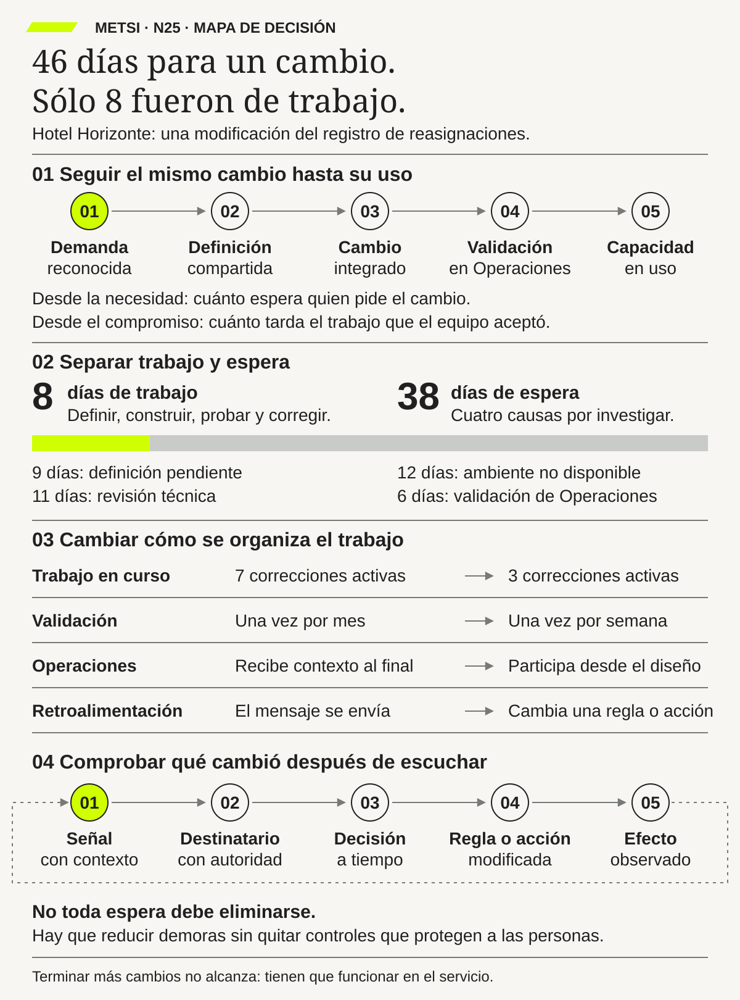

Fernando Flores
Creando organizaciones para el futuroDolmen · 1997
Ayuda a entender el trabajo como coordinación de compromisos entre personas; una promesa necesita cumplimiento y reparación.

La velocidad local no demuestra que el sistema de cambio produzca un mejor resultado de servicio.
Flujo más allá de las ceremonias: colas, lotes, esperas y aprendizaje
Ruta priorizada: 1 h 20 min a 1 h 40 min. Núcleo de lectura: 60 a 75 min; preparación: 20 a 25 min. Las extensiones agregan 30 a 45 min y profundizan el recorrido.

Nota. SIN NUM. identifica aparatos de orientación y referencia.
Seis referentes y las obras principales utilizadas para construir N25.
Ayuda a entender el trabajo como coordinación de compromisos entre personas; una promesa necesita cumplimiento y reparación.

Vincula diálogo y acción situada; las personas afectadas participan en la comprensión del problema, no sólo en la aprobación final.

Aporta límites de trabajo en curso y políticas explícitas para observar y gobernar el flujo.

Muestra cómo reconstruir recorridos reales a partir de registros de eventos y compararlos con el proceso declarado.

Relaciona operación de servicios, consistencia y recuperación con las promesas hechas a quienes los usan.

Vincula cambios pequeños, pruebas y feedback frecuente, sin confundir frecuencia de entrega con resultado.
N25 no resume estas fuentes ni las convierte en receta. Las pone en tensión para construir juicio profesional.
Si un equipo cumple sus reuniones y termina tareas, ¿por qué la persona que necesita el cambio sigue esperando meses? ¿Qué habría que mirar para mejorar el recorrido completo y no sólo el trabajo de una parte?

El flujo conserva identidad desde la demanda hasta una capacidad en uso y contrasta sus efectos sobre el servicio.
Imaginá que no podés entrar a tu cuenta bancaria. Avisás al banco. La persona de atención registra el problema y te dice que el equipo técnico trabaja en ciclos de dos semanas. Hay reuniones, un tablero y tareas que se van cerrando. Sin embargo, la corrección llega a todas las personas afectadas ciento dieciocho días después del primer reclamo. Para el equipo hubo varios ciclos de trabajo; para vos hubo cuatro meses de espera.
¿Dónde se fue ese tiempo? El reclamo esperó que alguien lo clasificara. Después esperó datos, una decisión sobre qué corregir, un ambiente de prueba, una revisión y una fecha de liberación. En algunos tramos se trabajó; en otros, nadie tocó la corrección. Cada sector podía mostrar tareas terminadas y, al mismo tiempo, el problema seguía abierto.
La primera idea de N25 es muy sencilla: no alcanza con mirar cuánto tarda una tarea dentro de un equipo. Hay que seguir una necesidad desde que se reconoce hasta que la solución se usa y se puede corregir si falla. A ese recorrido lo llamaremos flujo. Si sólo contamos desde que empieza a programarse hasta que el código se publica, desaparecen del indicador las semanas anteriores y las consecuencias posteriores. El número mejora, pero la espera de la persona no cambia.
Esto no quiere decir que toda espera sea mala. Una revisión de seguridad puede evitar que una corrección abra otro problema. En cambio, esperar dos veces la misma aprobación quizá no proteja nada. La pregunta profesional es: ¿qué función cumple cada pausa, quién espera y quién tiene autoridad para cambiarla?
Supongamos que el equipo decide empezar menos cambios al mismo tiempo. También prueba correcciones más pequeñas, incorpora antes a quienes deberán operarlas y reserva tiempo para incidentes. Tal vez termine menos tareas durante la primera semana. Eso no prueba un fracaso. Si al cabo de varias semanas las personas reciben antes una solución confiable y hay menos retrabajo, el recorrido completo mejoró.
Un tablero de Kanban puede ayudar a ver el trabajo abierto y limitarlo. Los sprints de Scrum pueden dar momentos regulares para revisar lo hecho. Ninguno de los dos, por sí solo, define dónde empieza la espera de la persona, qué significa «terminado» ni qué hacer con una corrección que vuelve. Los métodos sirven cuando ayudan a tomar esas decisiones; no reemplazan el juicio.
Esta lectura cierra el Bloque E. En N24 elegimos qué iniciativas podían asumirse con la capacidad disponible. Ahora veremos cómo esas iniciativas avanzan —o quedan detenidas— hasta producir un resultado comprobable.
En Hotel Horizonte conviene separar dos recorridos. Uno es el de la huésped: llega, recibe una habitación y quizá necesita una reasignación. Ese es el flujo del servicio. El otro es el del equipo que cambia una regla o una herramienta para mejorar ese servicio. Ese es el flujo del cambio. Podemos relacionarlos, pero no contarlos como si fueran la misma cosa.

N24 dejó dos apuestas activas: mejorar la cobertura accesible e instrumentar eventos para entender qué ocurre durante las llegadas y reasignaciones. En N25 seguimos una modificación de esa segunda apuesta. Desde que el hotel reconoció la necesidad hasta que todos los turnos usaron la nueva señal pasaron 46 días. Sólo 8 días hubo trabajo activo sobre ella; los otros 38 fueron esperas de distinto tipo. La corrección de cobertura accesible que tardó 118 días es otra unidad y no debe confundirse con ésta.
Veamos un momento concreto. Recepción registra una reasignación que el tablero no explica bien. Lucía Ferreyra pide que el registro distinga dos causas. Tecnología prepara un cambio, pero antes de probarlo necesita una definición común. Después espera un ambiente. Más tarde espera la ventana de revisión. Finalmente Operaciones debe comprobar que la señal se entiende y se usa igual en todos los turnos. El trabajo no estuvo detenido por una sola causa; atravesó varias colas.
El equipo toma veinte modificaciones recientes y descubre algo incómodo: no todos empiezan a contar en el mismo momento. Para Comercial, un cambio empieza cuando se aprueba la solicitud. Para Producto, cuando entra a su lista. Para Tecnología, cuando se programa. Para Operaciones, cuando llega una versión para validar. Si cada uno usa su propio reloj, nadie puede explicar los 46 días completos. Acordar que el inicio será la primera demanda reconocida no hace que el proceso sea más lento: hace visible una espera que ya existía.
La cola más larga tampoco está donde se esperaba. Mariela Benítez recibe cambios para validar una vez al mes porque no sabe con suficiente anticipación qué versión regirá en cada piso. Federico Müller propone más ambientes técnicos. Lucía señala que recibir contexto al final obliga a preguntar y repetir pruebas. Antes de comprar infraestructura, acuerdan probar cambios más pequeños y validarlos semanalmente con Operaciones desde el diseño. La hipótesis es que habrá menos espera y menos devoluciones; hay que medirlo.
Ricardo Sosa propone además bajar de siete a tres las correcciones activas. La primera semana parece que el equipo «produce menos»: se inician menos tareas. En la tercera, más modificaciones llegan efectivamente a uso y las que siguen abiertas tienen menos días de antigüedad. No es magia. Con menos asuntos simultáneos, las personas pueden cerrar uno, aprender del resultado y pasar al siguiente. El equipo conserva capacidad para incidentes y accesibilidad; no llena cada minuto con trabajo planificado.
Entonces aparece una urgencia comercial. Antes entraba al tablero sin que se viera qué desplazaba. Ahora Camila Duarte debe decir qué trabajo se pausa, cuánto podría demorarse y cuándo se retomará. El hotel decide no interrumpir la corrección accesible y usa parte de la reserva de capacidad que había definido en N24. Una prioridad real se nota en el tiempo y en las renuncias que produce, no sólo en una etiqueta.
Un día, Housekeeping avisa que dos bloqueos que el sistema registra igual requieren respuestas distintas. Si el mensaje quedara en un chat, el tablero podría mostrar «entregado» y el error volvería como incidente. El equipo envía la señal a quien decide la regla, corrige el siguiente corte y comprueba su efecto. Recibir feedback no es lo mismo que aprender: el circuito se cierra cuando la información cambia una acción.
El criterio de éxito tampoco puede ser sólo reducir días. Si el nuevo límite deja solicitudes sin respuesta, traslada trabajo al turno de noche o elimina un control que protege a huéspedes, hay que revisar la política. HH-25 entregará a N26 un mapa de cambios, colas, decisiones y reparaciones, junto con episodios del servicio que muestran si esas modificaciones mejoraron algo para la persona.
Una organización puede estar muy ocupada y entregar tarde. Sucede cuando cada área optimiza sus propias tareas, pero nadie sigue lo que la persona necesita a través de todas las áreas. Por eso, la tesis de N25 es que mejorar el flujo significa acortar y cuidar el recorrido completo de una necesidad hasta un resultado usado y reparable, no aumentar la actividad visible de un equipo.
La idea empieza con una decisión que parece menor: elegir qué unidad seguimos. En el hotel seguimos, por ejemplo, la modificación de una regla de instrumentación. Esa unidad puede generar tareas de análisis, desarrollo, prueba y operación; no deja de ser el mismo cambio al pasar de una mano a otra. Su efecto se comprueba con los episodios de llegada y reasignación. La modificación es la unidad de trabajo; el episodio de la huésped es evidencia del resultado. Si mezclamos ambas cosas, podemos contar tareas cerradas como si fueran experiencias resueltas.
Después hay que fijar inicio y salida. El inicio no puede moverse a la fecha que le conviene al equipo que informa la métrica. Si la necesidad era conocida el lunes y programación empezó tres semanas más tarde, esas tres semanas forman parte de la experiencia de espera. La salida tampoco debería ser «se publicó el código» si ningún turno lo usa todavía. Debe describir una capacidad en uso, observable y con una forma de reparar errores.
Con la unidad y la frontera claras, miramos cuántos cambios siguen abiertos, dónde esperan, cuánto trabajo activo reciben, cuántas veces vuelven y qué señales regresan después del uso. Ningún indicador por separado explica el problema. Siete cambios abiertos podrían indicar demanda alta, demasiadas prioridades simultáneas o una validación mensual que acumula trabajo. El mapa y los episodios permiten distinguir esas explicaciones.
Un ejemplo simple: si una persona intenta cocinar diez platos a la vez, puede tener todas las hornallas ocupadas y no servir ninguno a tiempo. Terminar tres platos antes de comenzar otros quizá mejore la cena, aunque durante un rato quede una hornalla libre. En una organización ocurre algo parecido, pero hay una diferencia importante: ciertas esperas protegen seguridad, derechos o calidad. No se las elimina para obtener un número atractivo; se examina su función y se busca realizarlas a tiempo.
El contraejemplo es copiar reuniones de Scrum o columnas de Kanban y llamar «ágil» al proceso sin definir qué entra, qué sale, quién decide una urgencia y qué pasa cuando algo falla. Las ceremonias pueden ayudar a conversar. Sin políticas y evidencia, también pueden ocultar colas. La mejora es una hipótesis que se prueba: esperamos menos demora, pero verificamos que no haya peor servicio, más trabajo nocturno o menos capacidad de reparación.
Esta tesis no promete una receta. Nos da una forma defendible de preguntar, medir y decidir. N26 ampliará la mirada a plataformas, servicios y terceros; por eso necesitamos llegar con un flujo que ya distinga necesidades, decisiones y consecuencias.
Para mejorar un cambio hay que seguirlo hasta su uso, distinguir trabajo de espera y comprobar qué cambia con la información recibida.

N24 respondió «¿qué vamos a intentar y qué vamos a dejar afuera por ahora?». Su respuesta fue una cartera con dos apuestas, límites de capacidad y fechas para revisar. N25 responde otra pregunta: «una vez elegido el trabajo, ¿cómo llega hasta un resultado?». N26 preguntará qué sucede cuando ese recorrido depende también de servicios, plataformas y organizaciones externas.
Varias tradiciones ayudan a mirar el mismo problema desde ángulos distintos. Lean y Kanban enseñan a ver inventario, esperas y políticas de entrada. La teoría de colas explica por qué una etapa ocupada casi todo el tiempo puede acumular demoras cuando la demanda varía. DevOps acerca construcción, operación y feedback. La gestión de servicios recuerda que no todo control debe quitarse para ganar velocidad.
Little formuló una relación entre trabajo abierto, tasa de salida y tiempo medio; la usaremos con cuidado, bajo una frontera y un período comparables. Hopp y Spearman estudiaron variabilidad y colas. Reinertsen mostró el costo de lotes grandes en el desarrollo de productos. Ohno vinculó flujo con observación directa del trabajo. Anderson hizo explícitos los límites de trabajo en curso. Forsgren, Humble y Kim relacionaron entrega técnica con estabilidad y aprendizaje. Van der Aalst mostró que los registros de eventos pueden reconstruir procesos reales, siempre que los eventos tengan significado y puedan vincularse.
Estas fuentes no dicen todas lo mismo. Un lote pequeño ayuda a aprender antes, pero puede sobrecargar a quien revisa si la revisión sigue siendo manual. Una aprobación puede proteger, pero su espera puede ser innecesariamente larga. Un despliegue frecuente puede acortar feedback técnico y, aun así, no mejorar la experiencia de la huésped. Esa tensión es útil: nos obliga a explicar por qué una práctica tiene sentido en este caso y qué resultado esperamos.
La tecnología tampoco resuelve el flujo por sí sola. Si una herramienta de inteligencia artificial permite escribir cambios más rápido, pero validación recibe más trabajo del que puede procesar, la cola se mueve de lugar. El informe DORA de 2025 estudia esa clase de amplificación. N25 toma la advertencia: antes de celebrar velocidad en una etapa, miramos el recorrido y los controles completos.
Primero elegimos algo concreto para seguir. Puede ser una corrección de una regla, una solicitud de alta o una mejora de accesibilidad. Le damos una identidad que permanezca aunque cambie de tablero, responsable o sistema. Después anotamos cuándo se reconoció la necesidad, qué hizo cada área, dónde esperó, cuándo se usó el resultado y si hizo falta repararlo.
Esto es distinto de dibujar un proceso ideal. El diagrama puede decir «analizar, desarrollar, probar, liberar»; la historia real puede incluir una devolución porque faltaba una excepción, dos semanas esperando autoridad y una reparación posterior. Necesitamos ambas miradas: el modelo ayuda a orientarnos y el caso real muestra qué ocurrió.
En Hotel Horizonte, la modificación de la señal tiene un identificador que une pedido, regla, pruebas y uso. Los episodios de las huéspedes se registran aparte para comprobar el efecto. No hace falta reunir datos personales que no ayuden a decidir; la trazabilidad sirve para entender el sistema, no para vigilar a una persona.
En palabras comunes. Es el viaje de una necesidad hasta un resultado que alguien puede usar. Una tarea terminada en el medio no es necesariamente el final del viaje.
En el hotel hay dos viajes relacionados. El de la huésped comienza con su necesidad de alojamiento y termina cuando recibe el servicio prometido y, si hubo una falla, una respuesta. El del cambio comienza cuando el hotel reconoce que una regla debe modificarse y termina cuando esa nueva capacidad funciona en todos los turnos previstos. No confundimos el número de habitaciones reasignadas con el número de cambios técnicos terminados.
Para profundizar. Una unidad puede regresar a una etapa anterior sin convertirse en «caso nuevo». Las devoluciones son información sobre el flujo, no algo que se borra para mejorar la métrica. También distinguimos restaurar el servicio de reparar una consecuencia: conseguir finalmente una habitación no borra la demora o el perjuicio que ya sufrió la huésped.
En palabras comunes. Es todo lo que empezamos y todavía no terminamos. Si el equipo abrió siete correcciones, aunque dos estén bloqueadas, siguen siendo siete asuntos abiertos.
Un tablero puede mostrar sólo las tres correcciones que programa Tecnología y esconder otras cuatro en correos o pendientes de validación. Para cuidar el flujo, el hotel cuenta la modificación completa desde el compromiso hasta su uso, no sólo la parte activa de un equipo. Los episodios de huéspedes se cuentan por separado como resultados del servicio.
Para profundizar. La edad de cada trabajo abierto es una advertencia temprana. Si algo lleva muchas semanas detenido, no esperamos a que entre en el promedio de casos terminados para investigarlo. Tampoco convertimos automáticamente todo caso antiguo en urgencia: identificamos la causa, la consecuencia de esperar y quién puede decidir.
En palabras comunes. Una cola es trabajo que podría avanzar, pero espera una persona, una capacidad o una decisión. Puede estar en una bandeja visible o escondida en un chat.
La modificación del hotel esperó definición, ambiente, revisión y validación. Son cuatro colas distintas. Si aceleramos programación y no cambiamos la ventana mensual de validación, la corrección simplemente llegará antes a la misma espera. Más velocidad local no significa menos tiempo total.
Para profundizar. Una cola puede ser protectora. El hotel quizá limita cambios durante un fin de semana de alta ocupación para no introducir fallas cuando hay poca capacidad de respuesta. Esa política debe decir qué protege, cuánto dura y quién soporta el costo. «Siempre se hizo así» no es una justificación suficiente.
En palabras comunes. Es el tiempo que pasa entre un comienzo y un final definidos. Incluye los días de trabajo y los días de espera. Para la modificación de instrumentación de HH-25 son 46 días: 8 activos y 38 de espera.
El hotel conserva dos relojes. El primero comienza cuando reconoce la necesidad; muestra cuánto espera quien la planteó. El segundo comienza cuando el trabajo entra en la capacidad comprometida; permite gobernar las modificaciones activas. Si Producto demora tres semanas en aceptar una solicitud, el segundo reloj será más corto, pero el primero no debe desaparecer.
Para profundizar. El promedio puede ocultar problemas. Si nueve cambios tardan treinta días y uno tarda 118, decir «el promedio mejoró» no alcanza para la persona del caso extremo. Miramos mediana, valores altos, casos abiertos y tipos de necesidad. Mantener la misma frontera es indispensable para comparar antes y después.
Cuatro medidas ayudan a orientarse: cuántas unidades siguen abiertas (trabajo en curso), cuántas terminan por período (tasa de salida o throughput), cuántos días llevan abiertas las que aún no terminan (edad) y cuánto tardaron las que sí salieron (tiempo de ciclo, desde el inicio acordado). Ninguna responde sola por qué hubo demora.
Supongamos que el hotel termina cinco correcciones por semana. Ese número no nos dice si se eligieron las más fáciles, si las accesibles siguen esperando o si las entregadas vuelven con errores. Lo leemos junto con la edad de los casos abiertos, las reaperturas, el servicio de las huéspedes y la capacidad de reparar. Si cambiamos el punto de inicio, conservamos durante un tiempo las dos series para no llamar «mejora» a un cambio de regla de medición.
Scrum y estas medidas pueden convivir. Un sprint de dos semanas ordena una meta y ofrece momentos para inspeccionar. La solicitud del hotel puede, sin embargo, esperar antes de entrar al sprint, atravesar varios y llegar a Operaciones después. Por eso el calendario del sprint no reemplaza el reloj de la necesidad. Una reunión diaria puede resolver bloqueos; una revisión semanal, mirar colas; una mensual, revisar el servicio. Cada reunión necesita una pregunta y alguien que pueda decidir. Reunirse más no es, por sí mismo, mejorar el flujo.
DORA ofrece medidas del tramo de entrega de software, como tiempo de entrega de cambios, frecuencia de despliegue, recuperación y fallas. Son útiles si se interpretan por servicio y junto con la estabilidad. No sustituyen el tiempo desde el pedido ni la experiencia de la huésped. N30 desarrollará esas métricas con más detalle.
Pongamos las medidas juntas en una conversación posible. Ricardo dice: «Esta semana salieron cuatro modificaciones; antes salían tres». Camila responde: «Bien, entonces vamos más rápido». Lucía mira los casos abiertos y observa que uno relacionado con accesibilidad lleva sesenta días sin llegar a uso. Mariela agrega que dos de las cuatro modificaciones volvieron a prueba porque los turnos entendieron distinto una regla. La tasa de salida subió, pero todavía no sabemos si el servicio mejoró. El equipo decide revisar la edad del caso accesible, las reaperturas y los episodios de huéspedes afectados antes de cambiar la política.
Podría ocurrir lo contrario. Supongamos que una semana salen sólo dos modificaciones porque se hizo una prueba adicional de seguridad. Si esa prueba detectó una falla que habría impedido recibir a una huésped y el equipo la corrigió sin acumular una cola nueva, contar «dos en vez de cuatro» como fracaso sería una mala lectura. El dato técnico necesita una historia comprobable: qué unidad se protegió, qué habría ocurrido sin el control y cuánto tiempo agregó. Una métrica ayuda a preguntar; no dicta por sí sola la decisión.
Por eso anotamos los cambios de definición. Si el hotel ahora considera terminada una regla cuando todos los turnos la usan, mientras antes la cerraba al publicarla, el nuevo tiempo de ciclo quizá parezca peor. Puede ser simplemente más honesto. Durante la transición conservamos ambos hitos y explicamos la diferencia. Recién después comparamos políticas. La medición es parte del gobierno del flujo: define qué espera se vuelve visible y quién debe responder por ella.
Ya sabemos dónde se detienen las modificaciones. Ahora debemos elegir qué cambiar. No hay un botón llamado «acelerar». Podemos empezar menos cosas, validar con más frecuencia, mejorar la información que pasa entre equipos o dar autoridad a quien espera una decisión. Cada opción afecta a otras personas y necesita una comprobación.


Por ejemplo, si Tecnología prepara una corrección pequeña cada semana pero Operaciones sólo valida el último viernes del mes, no ganamos cuatro semanas de aprendizaje. Las correcciones se acumulan al final del recorrido. Y si limitamos a tres las tareas del tablero, pero dejamos otras diez en correos sin responder, el número baja mientras la necesidad sigue allí. Las mejoras deben observarse desde la demanda hasta la salida.
Hay otra condición que suele olvidarse: las personas necesitan margen para una interrupción, una falla y una conversación que aclare el problema. Planificar el ciento por ciento de su tiempo puede parecer eficiente hasta que llega el primer incidente. No llamaremos mejora a una entrega más rápida obtenida con trabajo nocturno permanente o sin posibilidad de reparar.
En palabras comunes. Si siempre empezamos más asuntos de los que logramos terminar, se acumulan asuntos abiertos y la espera tiende a crecer. La Ley de Little permite relacionar tres promedios: trabajo en curso, cantidad que sale por período y tiempo que tarda cada unidad. Se escribe trabajo en curso = tasa de salida × tiempo medio, siempre que hablemos de la misma unidad, la misma frontera y un sistema suficientemente estable.
Un ejemplo sencillo: si, en promedio, el hotel termina dos modificaciones por semana y mantiene ocho modificaciones abiertas, la relación indica unas cuatro semanas de tiempo medio dentro de esa frontera. No dice que cada modificación tardará exactamente cuatro semanas. Algunas pueden durar días y otras meses. Tampoco demuestra que cerrar cuatro tareas de golpe vaya a cortar automáticamente el tiempo a la mitad.
Para profundizar. La relación sirve para detectar preguntas, no para imponer una meta ciega. ¿Contamos solicitudes o tareas? ¿Incluimos la espera anterior al compromiso? ¿La demanda de temporada se parece a la de la ventana que medimos? Si esas condiciones cambian, la interpretación también cambia. Ordenar «bajen el trabajo en curso» sin decidir qué sucederá con los pedidos que esperan puede esconder la cola fuera del tablero.
En palabras comunes. Un lote es un grupo de cambios que esperamos reunir antes de revisar, probar o entregar. Si juntamos un mes de modificaciones para una única validación, la primera puede pasar semanas esperando a las demás.
En el hotel, Mariela propone pasar de la validación mensual a cortes semanales más pequeños. Así se aprende antes si una regla se entiende en todos los pisos. Pero el cambio sólo sirve si cada corte es utilizable y Operaciones puede revisarlo. Entregar cada semana fragmentos que no funcionan juntos produce más trabajo parcial y no más aprendizaje.
Para profundizar. Hay motivos reales para agrupar: preparar un ambiente, coordinar un turno o hacer una prueba de seguridad tiene costo. Podemos reducir ese costo, automatizar una parte o aceptar un lote mayor cuando la protección lo justifica. La decisión compara espera, costo de coordinación, riesgo de error y capacidad de respuesta; no supone que «más pequeño» siempre es mejor.
En palabras comunes. Una transferencia ocurre cuando una persona o área pasa el trabajo a otra. No se entrega sólo un archivo; también deben viajar el motivo, lo que ya se decidió, las dudas pendientes y lo que se espera de quien recibe.
Tecnología puede enviar a Operaciones una nueva regla «terminada». Si nadie explica qué episodio de la huésped motivó el cambio y qué excepción debe probarse, Operaciones tiene que preguntar o interpretar. El archivo llegó a tiempo, pero el trabajo no estaba listo para avanzar. La demora aparece como retrabajo.
Para profundizar. No se trata de eliminar todas las transferencias. Algunas separan responsabilidades que conviene mantener; otras agregan un control independiente. Podemos mejorar la colaboración antes de la entrega y definir qué información mínima necesita el siguiente tramo. Una planilla con veinte campos no reemplaza una explicación clara del episodio y de la decisión.
En palabras comunes. Es información sobre lo que pasó después de actuar. Funciona cuando llega a alguien que puede cambiar la próxima decisión. Un mensaje leído, pero sin respuesta ni consecuencia, todavía no cierra el circuito.
Si Recepción informa que una nueva señal confunde dos clases de bloqueo y el equipo corrige la regla antes de ampliarla, aprendió. Si el aviso queda guardado en un chat y vuelve a aparecer como incidente, sólo acumuló mensajes. El hotel registra quién recibió la señal, cuánto tardó en decidir, qué cambió y cómo se comprobó el efecto.
Para profundizar. La demora del feedback tiene varias partes: detectar, comprender, decidir y modificar. Automatizar la alerta mejora sólo la primera. También importa la calidad de la señal: un reclamo por «error de asignación» puede tener origen en un dato tardío, una regla, una interfaz o una falta de autoridad. El episodio ayuda a investigar sin exigir que la huésped diagnostique el sistema.
Una prueba de tres semanas puede salir bien y después perderse. Para que el cambio dure, el hotel necesita reglas comprensibles: qué entra al trabajo activo, cuántas unidades puede sostener, cómo decide una urgencia, qué significa salida y quién repara una falla. Son políticas revisables, no mandamientos.
No bastará con que un indicador quede verde. Si baja el tiempo promedio pero crecen las excepciones accesibles, el resultado es insuficiente. Si aumentan las correcciones entregadas pero se acumulan incidentes, tampoco alcanza. El equipo mira un conjunto de señales y reconstruye casos reales para entender qué cambió.
En palabras comunes. No todos los pedidos llegan al mismo ritmo ni necesitan el mismo trabajo. Un martes puede haber dos consultas simples; otro, una falla que afecta muchos turnos. Esa diferencia es variabilidad.
Cuando todas las personas están ocupadas al máximo, cualquier imprevisto forma una cola. El hotel reserva capacidad para incidentes y distingue tipos de demanda. No pretende que una corrección pequeña, una barrera de accesibilidad y una reparación urgente tengan exactamente el mismo recorrido.
Para profundizar. La variabilidad no es siempre un defecto que deba eliminarse. Algunas necesidades son distintas porque las personas y los contextos lo son. Estandarizar todo para reducir la dispersión puede excluir casos importantes. Conviene investigar si la diferencia proviene de la llegada, del tamaño, de una dependencia o de una regla que trata mal una excepción.
En palabras comunes. Es la cantidad de unidades que de verdad alcanzan el final acordado durante un período. Si el equipo comenzó diez cambios y sólo dos se usan en el hotel, la salida es dos, no diez.
También importa la calidad de ese final. Una regla que se declara terminada y vuelve tres veces por el mismo error no representa tres resultados nuevos. El registro conserva reaperturas y reparaciones. Comparar equipos con unidades distintas —por ejemplo, consultas de un día contra cambios que atraviesan varias áreas— no dice quién trabaja mejor.
Para profundizar. La tasa de salida se interpreta junto con la demanda, el tiempo, los casos abiertos y el efecto de servicio. Puede subir porque se dividieron artificialmente las tareas o se eligieron sólo las fáciles. Su utilidad es seguir el mismo sistema a lo largo del tiempo, no construir un ranking de personas.
En palabras comunes. Compara el tiempo en que una unidad recibe trabajo pertinente con el tiempo total que pasa abierta. En la modificación de 46 días del hotel, hubo 8 activos: alrededor del 17 por ciento del calendario. La cuenta nos dice que conviene investigar la espera; no demuestra que el otro 83 por ciento pueda desaparecer.
Los 38 días se separan por causa. Una autorización quizá protegió un derecho; una ventana mensual pudo agregarse por costumbre; una revisión quizá necesitaba información que llegó tarde. Sólo después de entender cada tramo elegimos qué modificar.
Para profundizar. «Activo» tampoco significa automáticamente «valioso». Una corrección de un error propio puede mantener al equipo ocupado y ser retrabajo. Una revisión independiente puede no modificar el producto y, sin embargo, proteger a huéspedes. Por eso este porcentaje localiza una pregunta; no autoriza a exigir que cada persona esté ocupada todo el tiempo ni a borrar controles.
En palabras comunes. Cuando algo falla, hay que enterarse, decidir, restaurar el servicio, responder a quien fue afectado y aprender para que el mismo problema no se repita. Esa secuencia es más amplia que cerrar un ticket.
Una alerta puede indicar que la nueva regla no registró una reasignación. Lucía aporta el relato del turno; Ricardo decide si detener el cambio; Federico corrige; Recepción explica la solución a la huésped. Después se revisa la regla de prueba. Si sólo se corrige el dato técnico, pero no se atiende la consecuencia para la persona, la reparación quedó incompleta.
Para profundizar. Medimos tiempo hasta detectar, decidir, restaurar y comunicar. Una señal que se repite sin producir cambio indica un problema del propio circuito: quizá nadie tiene autoridad, quizá la revisión ocurre tarde o quizá se premia cerrar mensajes y no resolver causas. El objetivo es que la información modifique una política o una acción comprobable.
El mapa no empieza con una caja vacía y palabras generales. Empieza con una unidad identificable. Elegimos, por ejemplo, la modificación de la señal de reasignación y respondemos seis preguntas en orden: ¿quién reconoció la necesidad?, ¿cuándo?, ¿qué se hizo?, ¿dónde y por qué esperó?, ¿cuándo se usó en todos los turnos?, ¿qué pasó después? Las fechas que no conocemos se dejan en blanco y se investigan; no se reemplazan por cero.
Para que otra persona pueda reconstruir el caso, el registro conserva lo siguiente:
Veamos la unidad principal. El cambio de instrumentación tardó 46 días: 8 de trabajo y 38 de espera. De esos 38, nueve corresponden a definición, doce a disponibilidad de ambiente, once a revisión técnica y seis a validación de Operaciones. La cifra no dice todavía qué días eran evitables. El equipo investiga las cuatro causas y pregunta qué habría pasado si hubiera validado semanalmente, compartido el contexto antes o contado con otra política de revisión.
La demanda se reconoció el día cero. Después entró como una de las dos apuestas activas de HH-24. Más tarde estuvo técnicamente disponible y, sólo al final, todos los turnos utilizaron la señal. Son hitos distintos. Contamos trabajo en curso desde el compromiso, pero informamos la demora completa desde la demanda. Así una mejora del tablero no puede esconder el tiempo que la persona o el área solicitante ya esperó.
El equipo reconstruye veinte unidades reales con esos dos relojes. Para practicar sin datos de trabajo, esta lectura ofrece diez casos didácticos. Los tiempos están en días calendario; espera es total menos activo; reaperturas son devoluciones después de un cierre local.
| Unidad | Tipo | Total | Activo | Espera | Reaperturas |
|---|---|---|---|---|---|
| HH25-01 | instrumentación | 46 | 8 | 38 | 1 |
| HH25-02 | instrumentación | 52 | 7 | 45 | 2 |
| HH25-03 | regla de estado | 31 | 6 | 25 | 0 |
| HH25-04 | cobertura accesible | 118 | 10 | 108 | 3 |
| HH25-05 | cobertura accesible | 64 | 9 | 55 | 2 |
| HH25-06 | registro de evento | 28 | 5 | 23 | 0 |
| HH25-07 | regla de estado | 43 | 8 | 35 | 1 |
| HH25-08 | cobertura accesible | 76 | 11 | 65 | 2 |
| HH25-09 | registro de evento | 35 | 7 | 28 | 0 |
| HH25-10 | cobertura accesible | 89 | 12 | 77 | 3 |
La mediana es 49 días y el extremo llega a 118. Hubo catorce reaperturas. El tiempo activo ocupa cerca del 14 por ciento del calendario acumulado. Son pistas, no causas probadas: instrumentación parece esperar ambiente y validación; cobertura accesible suma definición y coordinación entre turnos. La propuesta debe identificar colas y proteger a quien espera.
Una hipótesis: validar semanalmente bajará la espera entre versión disponible y uso. Comparamos períodos semejantes y observamos devoluciones, horas extras y casos accesibles. El reloj desde la demanda detectará si la cola sólo se trasladó. Para unidades todavía abiertas informamos edad, no una salida inventada.
Una empresa completa formularios de alta en dos días, pero tarda noventa en habilitar a un proveedor. Compras, Legales, Seguridad y Finanzas pueden trabajar rápido por separado y devolver el expediente por datos faltantes. Para el proveedor, la espera continúa.
No quitamos controles necesarios. Acordamos información mínima, hacemos revisiones paralelas cuando sea posible y distinguimos casos simples de los de riesgo alto. Cada solicitante debe saber qué falta, quién decide y cómo corregirlo.
Un equipo elimina revisiones y duplica despliegues. El tablero mejora, pero aumentan fallas y reaperturas. La solución estable llega más tarde.
El error fue medir sólo hasta el despliegue. Podemos conservar revisiones que protegen, adelantar sus criterios y probar cambios pequeños. Preguntamos qué protege cada control, dónde conviene hacerlo y cuánto tarda.
Antes de extender una política, otra persona debe poder reconstruir una unidad desde la demanda hasta el uso y la primera consecuencia. El equipo prueba una urgencia, la ausencia temporal de una capacidad clave y una solicitud que quedó fuera del tablero. En cada situación pregunta qué trabajo se desplaza, qué cola crece y quién recibe la demora. Compara además un caso rápido con otro extremo: ¿qué produjo la diferencia? Si el tiempo sólo baja con horas extras, pedidos invisibles o controles omitidos, la mejora no se sostiene.

Medir un flujo obliga a decidir quién cuenta y cuándo empieza su reloj.
«Terminamos más puntos por sprint» describe actividad dentro de una convención del equipo. La huésped puede seguir esperando la misma solución. Para hablar de resultado, comprobamos uso, calidad, reparación y tiempo desde la demanda.
Si Tecnología desarrolla en tres días lo que antes tardaba cinco, pero validación mensual sigue igual, la demora total quizá no cambie. Miramos dónde quedó la cola siguiente antes de celebrar una mejora local.
Un turno lleno de tareas planificadas no tiene margen para un incidente. Puede parecer productivo hasta que un caso urgente interrumpe todo. El margen es una decisión de capacidad, no una falta de compromiso.
Una aclaración por chat, una corrección informal o una solicitud que nunca entró al tablero también consumen tiempo. Si sólo contamos tarjetas, el mapa no explica la experiencia real. Incorporamos esas unidades sin usar el registro para vigilar a individuos.
Abrir diez cambios nuevos llena el tablero; no hace que diez capacidades estén disponibles. Contamos salida y edad, además de entradas. Una unidad bloqueada sigue abierta aunque nadie la esté tocando.
Cambios más pequeños dan feedback temprano sólo si pueden probarse y usarse. Enviar piezas incompletas cada día puede multiplicar transferencias y pruebas sin resolver nada.
Una prueba de seguridad, una revisión de accesibilidad o una instancia de impugnación pueden proteger. Investigamos si el control cumple su función y si puede hacerse antes o con menos demora; no lo borramos por un objetivo numérico.
Si toda persona con poder puede saltar la cola, los compromisos anteriores nunca terminan. La política de urgencia debe mostrar admisión, límite, trabajo desplazado y fecha de recuperación.
Una mejora media puede convivir con casos accesibles que tardan muchísimo. Mostramos distribución, grupos y episodios extremos, no sólo un número cómodo.
Si Recepción informa el mismo bloqueo cada semana y nadie cambia una regla, no hay aprendizaje. El feedback necesita destinatario, autoridad, tiempo para decidir y verificación del efecto.

Este enfoque cambia el tipo de conversación que puede tener un profesional. En vez de preguntar «¿por qué el equipo no trabaja más rápido?», puede mostrar que una modificación pasó 38 de sus 46 días esperando y distinguir dónde ocurrió cada espera. Eso permite discutir una política concreta: validar semanalmente, compartir contexto antes o limitar correcciones simultáneas.
También ayuda a defender decisiones menos intuitivas. Dejar capacidad libre para incidentes puede mejorar el servicio. Terminar menos tareas en la primera semana puede ser parte de cerrar más cambios en la tercera. Conservar un control de seguridad puede ser correcto aunque alargue un tramo, si la alternativa traslada un riesgo grave a otra persona.
La propuesta profesional incluye una condición de revisión. «Creemos que la validación semanal reducirá la espera; lo mantendremos si no aumentan errores, horas extras ni demoras accesibles». Una decisión así no promete certeza. Hace visibles la hipótesis, el costo y la evidencia que permitiría cambiar de rumbo.
Medir un flujo obliga a decidir quién cuenta y cuándo empieza su reloj. Si sólo medimos desde la aceptación formal, podemos esconder a quienes esperan antes. Si cerramos al publicar código, podemos esconder fallas de uso o reparación. La frontera tiene efectos sobre lo que la organización ve y sobre lo que deja afuera; hay que explicarla.
Los datos de eventos pueden reconstruir recorridos muy detallados. Eso ayuda a encontrar colas, pero también puede convertirse en vigilancia de trabajadores. HH-25 sigue unidades y políticas, no rankings individuales. Acceso, finalidad y tiempo de conservación deben ser proporcionados al problema que se quiere resolver.
La Ley de Little habla de promedios en condiciones definidas; no predice la duración de una huésped concreta. Una proporción baja de tiempo activo no identifica automáticamente desperdicio. Y una cola puede proteger un derecho. Las cifras orientan preguntas; los episodios, el contexto y la discusión con personas afectadas ayudan a responderlas.

N25 termina con un mapa que une demanda, trabajo abierto, espera, decisión y reparación. En N26 seguiremos ese recorrido cuando dependa también de plataformas, proveedores y otros servicios. Cuantas más organizaciones participan, más importante es no perder la identidad de la necesidad original ni el efecto sobre la persona.
Fernando Flores ayuda a ver el servicio como una red de compromisos: alguien pide, alguien promete, varias personas coordinan y la promesa puede cumplirse o repararse. En el hotel, «la regla está publicada» no cumple por sí sola la promesa de una llegada accesible. La capacidad debe funcionar en un turno real y debe existir alguien que responda si falla.
Oscar Varsavsky invita a preguntar qué necesidades orientan la inversión. Paulo Freire recuerda que las personas afectadas no deberían aparecer sólo al final para validar una solución ya decidida. Si el hotel reduce la espera promedio pero empeora la experiencia de huéspedes con necesidades de accesibilidad, la mejora no es neutral: favorece a un grupo y desplaza el costo a otro. Esa discusión forma parte de gobernar el flujo.
Flujo es el recorrido completo de una necesidad hasta una capacidad usada, observable y reparable. Para comprenderlo seguimos una unidad con identidad, fijamos un inicio y una salida, localizamos trabajo abierto y colas, y observamos el efecto sobre las personas. Las reuniones y los tableros pueden ayudar, pero no reemplazan esa mirada.
En Hotel Horizonte, una modificación tardó 46 días aunque sólo recibió 8 de trabajo activo. La diferencia nos llevó a cuatro esperas y a una prueba concreta: menos correcciones simultáneas, validación más frecuente y mejor transferencia de contexto. El éxito no será un tablero más verde; será una capacidad disponible antes, sin daño trasladado y con reparación posible.
La Ley de Little relaciona promedios bajo condiciones definidas. Los lotes pequeños y los límites de trabajo en curso son hipótesis de mejora, no fórmulas mágicas. N26 ampliará la mirada a servicios y terceros, conservando la misma pregunta: ¿la necesidad llegó a un resultado defendible para quien la esperaba?

Flujo de valor: recorrido de una necesidad hasta un resultado usado y reparable.
Unidad de cambio: modificación identificable que atraviesa decisiones, tareas, validaciones y uso sin perder su identidad.
Trabajo en curso: unidades comprometidas que todavía no llegaron a la salida acordada, incluidas las bloqueadas.
Cola: trabajo que espera capacidad, información o una decisión para avanzar.
Tiempo de flujo: lapso entre el inicio y la salida definidos para una unidad; incluye trabajo y espera.
Edad: tiempo que lleva abierta una unidad que todavía no terminó.
Tasa de salida o throughput: cantidad de unidades completas que alcanzan la salida durante un período.
Ley de Little: relación entre promedios de trabajo abierto, tasa de salida y tiempo, bajo una frontera y condiciones comparables.
Lote: grupo de cambios acumulados antes de una revisión, transferencia o entrega.
Transferencia o handoff: paso de trabajo, información o autoridad entre personas o áreas.
Feedback: información sobre el efecto de una acción que puede modificar una decisión posterior.
Eficiencia de flujo: proporción entre tiempo activo y tiempo total; señala dónde investigar esperas, no qué control eliminar.
Para el encuentro, elegí una de las diez unidades didácticas o un caso real que puedas describir sin datos sensibles. Dibujá su recorrido, marcá dos esperas y proponé un cambio de política. La propuesta debe incluir qué mejora esperás, qué riesgo vigilarás y qué hecho te haría revisar la decisión.